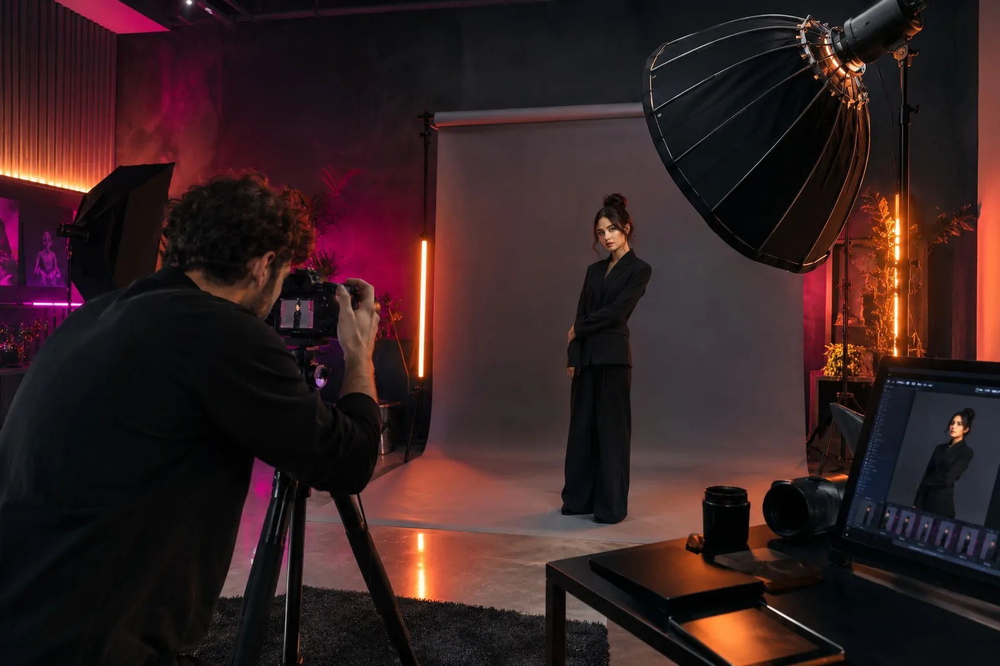

About LUMA
Visuals with
pulse.

We are a small, curious studio obsessed with light, texture and the tiny details that make an image stay with you.
Our work moves between commercial campaigns, portraits, hospitality, architecture and editorial stories.
Every project starts with a conversation, then becomes a visual language built around the people and place behind it.
CAMPAIGNSPORTRAITSSPACESEDITORIAL